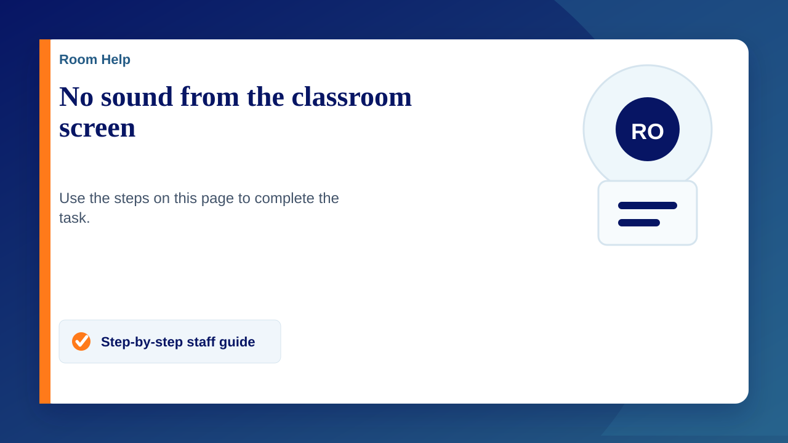

Picture on the board, but sound coming from your laptop? Choose the screen or room speakers as your sound output, then check the volume.
1. Check the basics
- Make sure the screen is switched on and showing your laptop's picture.
- Check that the laptop, screen and video player are not muted. Start with a low volume and turn it up gradually.
- If the room uses separate speakers, check they are switched on and their volume is turned up.
2. Choose where the sound plays
Windows laptop
- Right-click the speaker icon next to the clock at the bottom right of your screen and choose Sound settings. You can also open Start > Settings > System > Sound.
- Under Output, find Choose where to play sound (or Choose your output device).
- Select the classroom screen or room speakers. It may be listed as a TV, the screen's brand, HDMI or USB Audio. The name may not match the label on the screen.
- Play a short clip to check. If you are unsure which device is correct, try the available outputs one at a time at a low volume.
If sound still comes from the laptop or headphones, check which output is selected again. You may need to choose it again after reconnecting the dock or moving rooms.
Chromebook
- Select the time at the bottom right.
- Next to the volume slider, open Audio settings.
- Under Output, select the connected screen or room speakers, then play a short clip to check.
You can also go to Settings > Device > Audio and choose the output device there.
3. Still no sound?
- Screen or speakers missing from the list? Check the HDMI cable is firmly connected at both ends. If you use a dock, follow Dock issues: screen, touch or charging, then reopen sound settings.
- Only one video or website is silent? Check its own volume and mute controls. Try a different clip. In Chrome, right-click the tab and choose Unmute site if that option appears.
- Red cross on the Windows speaker icon? Follow the red-cross sound guide.
- Using the Senior theatre? Follow Theatre Projector & Sound (Senior) for the room's amplifier and audio controls.
4. Still stuck? Contact IT
Submit a support ticket with the room name, whether you use Windows or a Chromebook, whether the picture works, and whether sound comes from the laptop or nowhere at all. Include a screenshot of the available output devices and mention the checks you have tried.
Further help: Microsoft's Windows sound guide and Google's Chromebook audio guide.